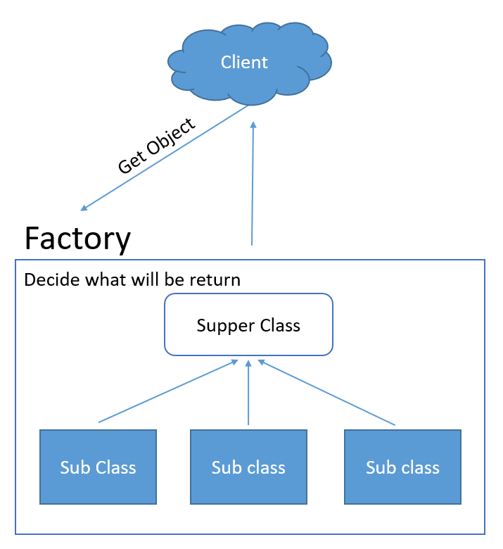

Bài toán
Ở nhà hàng nọ có 1 anh đầu bếp rất tài ba. Vì khả năng nấu nướng tuyệt vời của mình nên lúc nào cửa hàng của anh cũng đông khách. Anh luôn phải tất bật làm việc, từ đi chuẩn bị rau củ, đến rã đông cá cua, rồi băm chặt đủ thứ.
Cửa hàng ngày càng đông, sức anh ko làm được. Thế là một hôm, anh mới than phiền với ông chủ về điều này. Và ông chủ hứa sẽ tuyển cho anh một trợ lý.
Giải pháp
Trợ lý của anh chả biết gì về ẩm thực. Tất nhiên, tiền thuê đầu bếp lúc nào cũng rẻ hơn tiền thuê đứa rửa bát mà.
Và nhiệm vụ của nó là sẵn sàng cung cấp cho anh các loại thực phẩm mà anh cần. Anh chỉ việc yêu cầu và nó sẽ mang tới cho anh chỉ sau vài giây.
Từ đó, anh đầu bếp chỉ hí húi bên cái bếp lửa của mình và mọi việc còn lại đã có anh phụ bếp này lo.
Anh trợ lý / phụ bếp này chính là Factory.
Trong lập trình cũng vậy, có đôi khi ta có quá nhiều object, và ta muốn quản lý việc khai báo chúng, khi đó ta sử dụng Factory như một anh trợ lý, để cung cấp các object theo yêu cầu.
Nếu như cửa hàng mở rộng thêm, và ông chủ tuyển thêm một anh đầu bếp khác nữa, thì anh ta cũng chỉ cần quan tâm tới việc nấu nướng của mình, còn việc cung ứng nguyên liệu, vẫn là do anh phụ bếp này quản lý. Và khi anh ấy yêu cầu Trứng gà, thì chắc chắn anh ta ko mất thời gian để đi tìm nó giữa la liệt đống trứng ngỗng.
Giới thiệu
Factory Pattern là một trong những pattern phổ biến nhất trong lập trình hướng đối tượng.
Nhiệm vụ của nó là quản lý và trả về các đối tượng theo yêu cầu, giúp cho việc khởi tạo đối tượng một cách linh hoạt hơn.
Bản chất của Factory là Định nghĩa một giao diện (interface) cho việc tạo một đối tượng, nhưng để các lớp con quyết định lớp nào sẽ được tạo. Factory method giao việc khởi tạo đối tượng cụ thể cho lớp con.
Nói giao việc khởi tạo cho lớp con, ko có nghĩa là có cái lớp con nào đó và override cái method đó, mà lớp con sẽ sử dụng interface + danh sách các tham số mà Factory cung cấp, và quyết định xem nó muốn cái gì.
Tức là nó kêu, tao muốn trứng gà, thì nó gọi interface + "trung-ga" chẳng hạn.
Implements
Nhóm các object cùng chức năng thành một loại, có thể dụng Abstract Class hoặc Interface
Xây dựng một Factory để lấy ra một object trong nhóm đó, tùy thuộc vào tham số truyền vào.
Ví dụ, ta xếp trứng gà, trứng vịt, trứng ngỗng, trứng khủng long vào cùng một rổ. Mỗi khi anh đầu bếp yêu cầu trứng gà, thì anh trợ lý sẽ vào và lấy quả trưng theo yêu cầu ra.
Ta thường sử dụng Factory khi mà chúng ta có 1 super class và multiple sub-classes. Và tùy theo input truyền vào, ta cần phải trả lại 1 trong số các subclass ở trên kia.
Factory pattern mang nhiệm vụ instance của class từ client đến Factory. Và việc của bạn còn lại rất đơn giản, getFactoryObjectByType, và nó sẽ trả ra object mà bạn cần.
Dưới đây là mô tả về việc implement của nó
- Super class - Có thể là interface / abstract
- Subclass -- Các class implements interface trên kia / extend từ abstract class trên kia.
- Factory Class với một static method handle việc initialize và return lại subclass từ tham số client truyền vào
Những lưu ý thêm về việc implement pattern này:
1. Bản chất của Factory pattern là quản lý việc khởi tạo các object. Vì vậy ta nên khai báo private cho constructor của subclass để ngăn cho nó không được khởi tạo từ bên ngoài của Factory. 2. Factory class được sử dụng như một Utils Class (utils - sử dụng). Vì vậy ta nên biến cái Factory Class thành một Singleton Class / hoặc khai báo static cho cái method getFactoryObjectByType của nó để có thể sử dụng ở bất cứ đâu.
Xem ví dụ trong FactoryPatternExample
Important things
Thông thường, để tránh cho việc ta có thể khởi tạo 1 Object mà ko thông qua Factory, thì ta hide đi cái constructor của nó là xong. Vấn đề là làm sao vừa hide đi constructor mà lại có thể khởi tạo object? Ta có thể sử dụng từ khóa protected để giới hạn điều này.
Luôn nhớ rằng, Factory ra đời để có thể tạo 1 list các Object cùng category. Thế nên khi lựa chọn nó để đưa vào làm super class của Factory thì cần xem xét cho kĩ.
Những lợi ích mà nó mang lại
Bản chất Factory pattern đó chính là quản lý việc khởi tạo instance phù hợp với các yêu cầu khác nhau. Vì vậy nó sẽ giải quyết những vấn đề sau:
- Tạo ra một cách mới trong việc khởi tạo các objects, thông qua một interface chung
- Khởi tạo các object mà che dấu đi logic của việc khởi tạo
- Giảm sự gắn kết giữa các module, các logic với các class cụ thể, mà chỉ phụ thuộc vào abstract hoặc interface
Giải thích chi tiết thêm về các ưu điểm kia:
1. Đối với các nhà máy - factory - thì nó sẽ có 1 cái method, để xử lý request từ phía client - bên ngoài - và trả lại object hợp lý.
2. Tất cả những gì client nhận được, là 1 interface/ abstract class được trả về từ request. Việc bản chất của object đó như thế nào hoàn toàn bị che dấu bởi factory và client chỉ biết là họ đã có cái họ cần mà thôi.
3. Rõ ràng, vì việc khởi tạo object như thế nào là công việc bên trong của Factory, nên nếu như ta cần thay đổi (một đối tượng / một nhóm các đối tượng) thì những gì ta cần làm chỉ là update lại cái method của factory mà ko cần thay đổi những vị trí sử dụng của nó. Do đó, sự liên kết sẽ bị hạn chế.
Những giới hạn của nó
Một Factory pattern có thể giải quyết khá nhiều vấn đề, tuy nhiên cũng có những vấn đề mà nó không thể giải quyết được. Dưới đây là những hạn chế - và nếu rơi vào trường hợp này thì ta cần cân nhắc xem có áp dụng pattern này trong việc lập trình hay ko.
- Khi có một class đã xài quá nhiều, việc sửa đổi - refactoring - sẽ kéo theo : Hoặc là bạn phải cập nhật tất cả các đoạn code khởi tạo nó = cái Factory, hoặc là nó có thể bị lỗi. Tuy nhiên cái intellj nó có thể refactor cái này nên có thể xem như nó ko thật sự quan trọng. Nhưng biết đâu một ngày đẹp trời ta lại phát hiện ra đâu đó 1 thằng mà nó init lên khác với những thằng còn lại - khác với factory. Vậy là lại nảy sinh vấn đề.
- Trong Factory pattern, cách duy nhất để bạn khởi tạo 1 object là phải thông qua Factory. và vì vậy mà những object này ko thể được mở rộng thêm nữa. Vì vậy, nếu bạn cần một object có khả năng mở rộng sau này thì nó ko phải là một lựa chọn hay.
- Nếu ta muốn sử dụng nó theo cách có thể mở rộng, bằng việc khai báo protected cho các constructor,
Khi nào ta cần sử dụng Factory Pattern
Theo như cái ưu điểm trên kia mà ta đã liệt kê, thì những trường hợp sau ta có thể sử dụng Factory Pattern
- Khi ta có 1 nhóm các object cùng chức năng / ta muốn sử dụng một phương thức khác để tạo ra object
- Khi ta có một object mà việc khởi tạo của nó quá phức tạp, và ta muốn che dấu chi tiết bên trong/ đơn giản hóa việc khởi tạo
- Khi ta muốn làm giảm sự phụ thuộc vào các object đó.
Factory Pattern Trong JDK
Extends
Theo như cái trên kia, rõ ràng ta có thể có 2 cách để tạo 1 Object bằng Factory..
Cách thứ nhất, ta cung cấp một đống interface, và cứ khi nào client cần gì thì gọi cái đó, như sau:
public static Animal getDog(){
return new Dog();
}
public static Animal getCat(){
return new Cat();
}
Cách thứ 2, ta che dấu toàn bộ, chỉ cung cấp 1 interface mà thôi.
public Animal getAnimal(String type){
if (type.equals("cat")) {
return new Cat();
} else if (type.equals("dog")){
return new Dog();
} else {
return null;
}
}
Vậy, cái nào là tốt hơn??
Quan điểm của Factory đó là che dấu đi quá trình khởi tạo / implement bằng cách cung cấp 1 interface Trong cả hai cách trên, ta đều che dấu di việc khởi tạo Object ntn mà chỉ cung cấp một abstract class mà thôi. Rõ ràng cả 2 cái đều thỏa mãn point of view của Factory.
Factory 1 có vẻ như rõ ràng và dễ hiểu, đọc cái là biết ngay nó định làm gì. Tuy nhiên điều gì sẽ xảy ra khi mà bạn thêm vào đó 1 con bò.
Trong trường hợp thứ nhất toàn bộ client được thông báo rằng có 1 cái interface được tạo, và họ thấy ngạc nhiên, vì họ đâu cần con bò đâu. Rõ ràng, code ở đây đã bị ảnh hưởng. (Bị ảnh hưởng ở đây là việc biên dịch lại và redeploy lại, chứ không hẳn là source code bị thay đổi.)
Do đó, mặc dù code thứ 2 khó đọc hơn, nhưng mà nó lại thực sự tốt hơn.